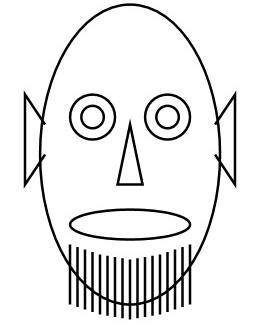

PETZOLD BOOK BLOG
Charles Petzold on writing books, reading books, and exercising the internal UTM
The Tim Sneath Challenge III
August 17, 2006
Roscoe, NY

I call this piece of XAML art "Self Portrait Sans Glasses." A version done with separate Ellipse, Polygon, and Line elements with various fill colors appears in Chapter 27 of
my book. You can download or run the stripped-down version of SelfPortraitSansGlasses.xaml or just look at it here:
<!-- SelfPortraitSansGlasses.xaml by Charles Petzold -->
<Path xmlns="http://schemas.microsoft.com/winfx/2006/xaml/presentation"
Stroke="Black"
StrokeThickness="2"
Data="M 168 96 A 72 120 180 0 0 168 336
A 72 120 180 0 0 168 96
M 100 192 L 84 168 84 240 100 216
M 236 192 L 252 168 252 240 236 216
M 138 168 A 18 18 180 0 0 138 204
A 18 18 180 0 0 138 168
M 198 168 A 18 18 180 0 0 198 204
A 18 18 180 0 0 198 168
M 138 177 A 9 9 180 0 0 138 195
A 9 9 180 0 0 138 177
M 198 177 A 9 9 180 0 0 198 195
A 9 9 180 0 0 198 177
M 168 192 L 158 240 178 240 Z
M 168 260 A 48 12 180 0 0 168 284
A 48 12 180 0 0 168 260
M 120 288 V 336
M 126 290 V 338
M 132 292 V 340
M 138 294 V 342
M 144 296 V 344
M 150 297 V 345
M 156 298 V 346
M 162 299 V 347
M 168 300 V 348
M 174 299 V 347
M 180 298 V 346
M 186 297 V 345
M 192 296 V 344
M 198 294 V 342
M 204 292 V 340
M 210 290 V 338
M 216 288 V 336" />
Because it's a single element, I'm pretty sure it meets the
Tim Sneath challenge.
(c) Copyright Charles Petzold
www.charlespetzold.com